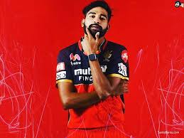

image box
virat kohli:-

Virat Kohli (Hindi pronunciation: [ʋɪˈɾɑːʈ ˈkoːɦli] ⓘ; born 5 November 1988) is an Indian international cricketer and the former captain of the Indian national cricket team. He is a right-handed batsman and an occasional medium-fast bowler. He currently represents Royal Challengers Bangalore in the IPL and Delhi in domestic cricket. Kohli is widely regarded as one of the greatest batsmen in the history of cricket and the best of the 21st century.[3] He holds the record as the highest run-scorer in T20I and IPL, ranks third in ODI, and stands as the fourth-highest in international cricket.[4] He also holds the record for scoring the most centuries in ODI cricket and stands second in the list of most international centuries scored. Kohli was a member of the Indian team that won the 2011 Cricket World Cup, 2013 ICC Champions Trophy, and captained India to win the ICC Test mace three consecutive times in 2017, 2018, and 2019.[5]
ab devillers

Abraham Benjamin de Villiers (born 17 February 1984) is a South African former international cricketer, and a current commentator. AB de Villiers was named as the ICC ODI Player of the Year[2] three times during his 15-year international career and was one of the five Wisden cricketers of the decade at the end of 2019.[3] He is regarded as one of the greatest cricketers in the history of the sport and as one of the best batsmen of his era.[4][5] de Villiers began his international career as a wicket-keeper-batsman, but he has played most often solely as a batsman. He batted at various positions in the batting order, but predominantly in the middle-order. Regarded as one of the most innovative and destructive batsmen in the modern era, de Villiers is known for a range of unorthodox shots, particularly behind the wicket-keeper.[6] He made his international debut in a Test match against England in 2004 and first played a One Day International (ODI) in early 2005. His debut in Twenty20 International cricket came in 2006. He scored over 8,000 runs in both Test and ODI cricket and is one of the very few batsmen to have a batting average of over fifty in both forms of the game.[7] In limited overs cricket, he is an attacking player.[8] He holds the record for the fastest ODI fifty (16 balls), fastest ODI century (31 balls), and fastest ODI 150 (62 balls).
maxwell

Glenn James Maxwell (born 14 October 1988) is an Australian professional cricketer. He has played for the Australia national cricket team in all formats of the game since 2012, although he is primarily a One Day International and Twenty20 International specialist.[3] Maxwell is an all-rounder who is known for his sometimes unorthodox batting and bowls right arm off-break deliveries. Domestically he played for Victoria and Melbourne Stars.[4] He was part of the Australian squads that won the 2015 Cricket World Cup, the 2023 ICC Cricket World Cup, and the 2021 T20 World Cup. His ability to make unconventional shots like reverse sweeps and pulls often makes it hard to set fields that cover all of his scoring areas.[5]
dinesh karthik

Krishnakumar Dinesh Karthik (born 1 June 1985) is an Indian professional cricketer and commentator who nationally plays for the Indian Cricket Team and currently in Indian Premier League playing for Royal Challengers Bangalore. He is also the current captain of the Tamil Nadu cricket team in domestic cricket. He made his debut for the Indian cricket team in 2004. Karthik has become the 4th Indian batsman to play 300 T20 matches.[1] Karthik was a member of the team that won both the inaugural 2007 T20 World Cup and the 2013 ICC Champions Trophy.
He made his maiden Test century against Bangladesh and was India's leading scorer in their Test tour of England,[2] helping India win their first series in England in 21 years. After a drop in form in September 2007, Karthik was dropped from the Test team. He has made only sporadic international appearances since then, although he continues to score well domestically. Between 2018 and 2020, he was the captain of IPL team Kolkata Knight Riders. Karthik has also worked occasionally as a commentator/pundit for British channel Sky Sports between 2020 and 2021, most notably during India's tour of England.
mohammad siraj:-

Mohammed Siraj (born 13 March 1994) is an Indian cricketer who plays as a right-arm fast bowler for the Indian national team. He also plays for Royal Challengers Bangalore in the Indian Premier League and Hyderabad in domestic cricket. In 2017, he played for IPL team of Sunrisers Hyderabad.
Early life
Siraj was born on 13 March 1994 in Hyderabad, Telangana to a Hyderabadi Muslim family. His father, Mohammed Ghaus, was an auto rickshaw driver, and his mother, Shabana Begum, is a housewife. His elder brother, Mohammed Ismail, is an engineer. He started playing club cricket at the age of 19 after playing with the tennis ball before the age of 19, after only starting to actually bowl at 16, and in his first match got 9 wickets for his uncle's team in the Hyderabad Cricket association.[3][4]
cemeron green

Cameron Donald Green (born 3 June 1999) is an Australian cricketer who plays for Australia, Western Australia and Perth Scorchers as a batting all-rounder. He made his international debut for the Australian national cricket team in December 2020.[3] Green was a member of the Australian team that won the 2023 Cricket World Cup and the 2023 ICC World Test Championship final.
Career
Green grew up in Subiaco, Perth and played for the Subiaco-Floreat Cricket Club. He started playing in the 2009–10 season in the under 13s league,[4] when he was 10 years old. His rapid development meant he made his WACA first grade debut at the age of 16. Green earned a rookie contract with the Western Australian Cricket Association (WACA) ahead of the 2016/17 Sheffield Shield season, largely thanks to averaging 82 runs per innings and taking 20 wickets in eight games in the under 19s national league.
rajat patidher

Rajat Manohar Patidar (born 1 June 1993) is an Indian International cricketer. He is a right-handed top order batter and off-spinner. He plays for Madhya Pradesh in domestic cricket and for the Royal Challengers Bangalore in the Indian Premier League.[1] On 21 December 2023, he made his international debut against South Africa.
Early life
Patidar was born on 1 June 1993 in Indore, Madhya Pradesh.[2] His father is a businessman. He joined a cricket club when he was 8 years old and was later enrolled into an academy by his grandfather. He started his career as a bowler and started concentrating on batting after his U-15 levels.[3]